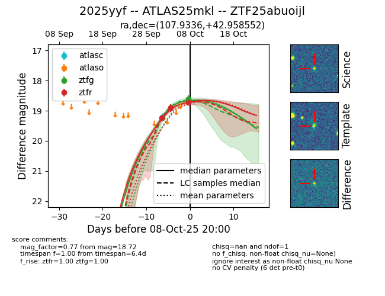

FINK: ZTF25abuoijl
Lasair: ZTF25abuoijl
ALeRCE: ZTF25abuoijl
TNS: 2025yyf
YSE: 2025yyf
ZTF25abuoijl (ztf,fink)
2025yyf (tns,yse)
ATLAS25mkl (atlas)
equatorial (ra, dec) = (107.9336,+42.95855)
galactic (l, b) = (174.5704,+21.61360)

last ztfg=18.60, ztfr=18.72
3 ztfg, 3 ztfr detections